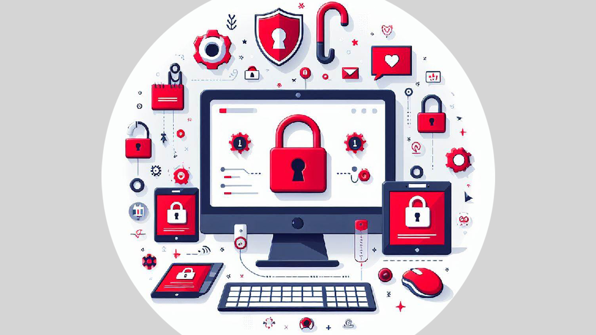
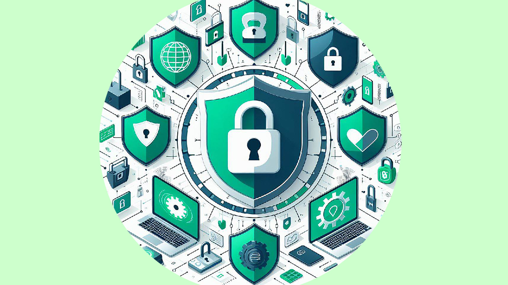

Guia Prático para uma Navegação Segura Online

Evite cair em armadilhas online, como tentativas de enganar você (phishing) e proteja-se contra roubos de identidade. É como se fossem esquemas virtuais para pegar suas informações pessoais.
Dicas Simples para uma Navegação Segura.

- Crie Senhas Fortes: Use combinações de letras, números e símbolos.
- Mantenha Seu Software Atualizado: É como manter as portas e janelas da sua casa bem trancadas.
- Cuidado com E-mails Suspeitos: Não clique em links de e-mails desconhecidos.Crie metas realistas para tornar o processo menos assustador.
- Ajuste Suas Configurações de Privacidade: Controle quem pode ver suas informações online.
- Monitore Suas Contas: Fique de olho nas suas contas para detectar atividades estranhas.
Tornando-se um Navegador Consciente e Seguro
Ao seguir essas dicas simples, você está se preparando para navegar com segurança na internet. É como aprender a atravessar a rua: observe, siga as regras e fique atento. Ao se tornar consciente digital, você constrói uma defesa sólida contra as ameaças online.